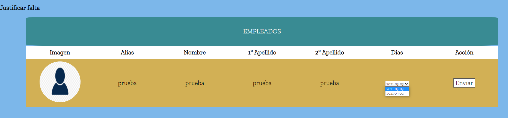
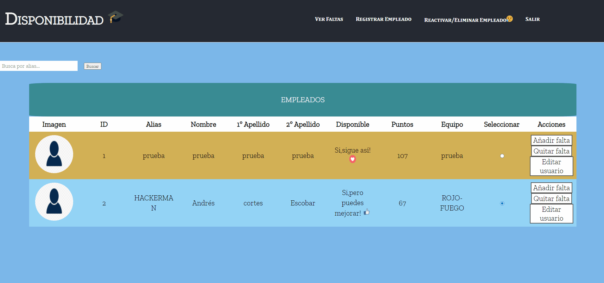

En esta parte podemos quitar las faltas ya que es como si estuviesen justificadas, desde el inicio de la parte privada le dimos a añadir falta, ahora seleccionamos quitar falta
Vemos que aparecen todas las fechas que tiene seleccionamos la que queremos que se justifiquen
Demostración
Como hemos visto tenía solamente una falta y vemos que al quitarla no se ha vuelto a quedar el usuario con 100 puntos sino con 107, es por que le quita los puntos que se le habían quitado pero tuvo optimas esas horas que ha estado no pueden ser eliminadas, por lo que se quedaría en 107.